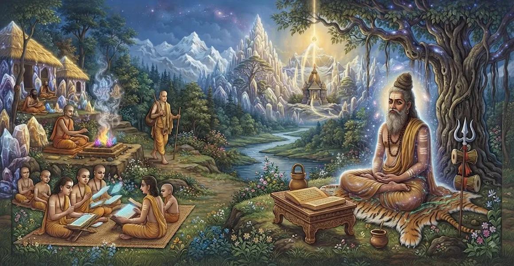

संन्यासी का दैनिक आचरण
कैलाश संहिता का चौथा अध्याय एक समर्पित संन्यासी के लिए निर्धारित दैनिक दिनचर्या, शुद्धिकरण संस्कार और आध्यात्मिक कर्तव्यों पर विस्तार से बताता है।
भगवान शिव बताते हैं कि कैसे एक तपस्वी को हर पल - भोर से पहले के ध्यान से लेकर शाम के चिंतन तक - मन को लगातार ईश्वर से जोड़े रखने के लिए संरचना करनी चाहिए।
ये व्यावहारिक दिशानिर्देश दैनिक शारीरिक गतिविधियों को पूजा और आत्म-साक्षात्कार के निर्बाध कार्यों में बदल देते हैं।
अध्याय 4 की मुख्य बातें
ब्रह्ममुहूर्त दिनचर्या
गुरु और परम शिव का ध्यान करने के लिए सूर्योदय से पहले उठने का निर्देश दिया गया है।
पवित्र स्नान
जल और पृथ्वी जैसे प्राकृतिक तत्वों का उपयोग करके शारीरिक शुद्धि की विधियों का विवरण।
भस्म का प्रयोग
शरीर की क्षणभंगुरता और आध्यात्मिक शुद्धता को दर्शाने के लिए पवित्र राख के साथ त्रिपुण्ड्र अनुप्रयोग पर प्रकाश डाला गया है।
भिक्षा के नियम
प्राथमिकता या लगाव के बिना भोजन इकट्ठा करने के लिए अनुशासित दृष्टिकोण की रूपरेखा।
सतत जप
प्रणव और पंचाक्षर मंत्रों के निरंतर मानसिक दोहराव पर जोर दिया गया है।
संध्या चिंतन
त्यागी को आंतरिक अवस्थाओं की समीक्षा करने और अद्वैत जागरूकता में आराम करने का निर्देश देता है।
इस अध्याय में मुख्य विषय
भोर पूर्व जागरण और स्मरण
एक संन्यासी का दिन सूर्योदय से पहले ब्रह्म मुहूर्त के शांत घंटों में शुरू होता है, जो दिव्य ऊर्जा से संतृप्त समय होता है।
साधक सबसे पहले आध्यात्मिक गुरु को प्रणाम करता है और हृदय में निवास करने वाले शिव के निराकार स्वरूप का ध्यान करता है।
शुद्धि एवं स्नान की विधियाँ
शास्त्रोक्त आदेशों के अनुसार शुद्ध जल और मिट्टी का उपयोग करते हुए, निर्धारित स्नान अत्यंत सावधानी से किया जाता है।
स्नान केवल शारीरिक धुलाई नहीं है, बल्कि नहाने के पानी में पवित्र नदियों का आह्वान करके मानसिक शुद्धि का एक अनुष्ठान है।
पवित्र राख का अनुप्रयोग (भस्म धारण)
स्नान के बाद, तपस्वी पवित्र राख (भस्म) को माथे और अंगों पर तीन क्षैतिज रेखाओं (त्रिपुण्ड्र) में लगाता है।
ये रेखाएँ शुद्ध जागरूकता को छोड़कर तीन अशुद्धियों (माला), तीन लोकों और तीन गुणों के विनाश का प्रतीक हैं।
संध्या संस्कार और प्रणव जप
दिन के तीनों समय (सुबह, दोपहर और शाम) भिक्षु मौन चिंतन और प्रणव पाठ करता है।
ओंकार का ध्यानपूर्ण दोहराव प्राथमिक आध्यात्मिक भोजन के रूप में कार्य करता है, जो महादेव के साथ निर्बाध संबंध बनाए रखता है।
भिक्षा मांगने का अनुशासन
दोपहर का समय केवल जीविका के लिए भिक्षा मांगने, बिना अपेक्षा या प्राथमिकता के कुछ घरों में जाने के लिए आरक्षित है।
भोजन को भगवान शिव के प्रसाद के रूप में स्वीकार किया जाता है, मन को हल्का और गहन चिंतन के लिए उपयुक्त रखने के लिए संयमित मात्रा में खाया जाता है।
संध्या विश्राम और आंतरिक शांति
जैसे ही रात होती है, संन्यासी दिन के अनुशासन पर विचार करता है और किसी भी अनजाने चूक के लिए क्षमा मांगता है।
पूरी जागरूकता के साथ संक्षेप में आराम किया जाता है, मन को शिव के पवित्र चरणों पर केंद्रित रखते हुए शरीर को आराम दिया जाता है।
अध्याय 5 की ओर
एक तपस्वी के सामान्य दैनिक आचरण को स्थापित करने के बाद, शास्त्र अध्याय 5, 'तपस्वी के रहस्यवादी आरेख को नियंत्रित करने वाले नियम' में बदल जाता है।
अध्याय 5 उच्च शैव अनुष्ठानों में उपयोग किए जाने वाले पवित्र ज्यामितीय आरेखों (मंडल/यंत्रों) पर ध्यान केंद्रित करते हुए उन्नत पूजा तकनीकों की ओर बढ़ता है।
अध्याय 4 की प्रमुख शिक्षाएँ
सख्त अनुशासन
एक संरचित दैनिक दिनचर्या मानसिक व्याकुलता और आलस्य को रोकती है।
बाहरी और भीतरी शुद्धता
शारीरिक स्वच्छता आंतरिक आध्यात्मिक शुद्धता के लिए माध्यम का काम करती है।
पृथक जीवन
लालच के बिना भिक्षा प्राप्त करने से मन पूर्ण अनासक्ति में प्रशिक्षित होता है।
क्षणभंगुरता का स्मरण
भस्म धारण करने से साधु को लगातार नश्वर शरीर की नियति की याद आती रहती है।
प्रणव एकीकरण
प्रत्येक क्रिया में पवित्र ध्वनि को एकीकृत करने से ध्यान की निरंतरता बनी रहती है।
आंतरिक शांति
पूरे दिन समभाव नियमित कार्यों को परम योग में परिवर्तित कर देता है।
आध्यात्मिक चिंतन
एक संन्यासी के दैनिक आचरण से पता चलता है कि सच्ची आध्यात्मिक प्रगति निरंतर अनुशासन पर आधारित होती है। नहाने से लेकर खाने तक हर सांसारिक कार्य को भक्ति और जागरूकता से जोड़ने से जीवन स्वयं शिव की निर्बाध पूजा बन जाता है।
अध्याय 4 का संदेश जीना
प्रार्थना, शांति से पढ़ने या ध्यान के लिए समर्पित एक नियमित सुबह की दिनचर्या स्थापित करें।
उच्च शारीरिक ऊर्जा और मानसिक स्पष्टता बनाए रखने के लिए खान-पान और वाणी पर संयम रखें।
रोजमर्रा के कर्तव्यों और पेशेवर जिम्मेदारियों में संलग्न रहते हुए भगवान की आंतरिक स्मृति बनाए रखें।
प्रमुख आध्यात्मिक अवधारणाएँ
भोर से पहले का शुभ समय ध्यान और आध्यात्मिक अभ्यास के लिए आदर्श है।
शरीर पर पवित्र भस्म मलने और त्रिपुण्ड्र धारण करने का पवित्र अनुष्ठान।
केवल शारीरिक जीविका के लिए भिक्षा एकत्र करने की पवित्र प्रथा।
सुबह, दोपहर और शाम को पूजा और ध्यान किया जाता है।
चिंतनशील स्थिति बनाए रखने के लिए संयमित एवं शुद्ध आहार आवश्यक है।
आध्यात्मिक साधकों के लिए शारीरिक एवं मानसिक स्वच्छता निर्धारित।
अध्याय सारांश
कैलाश संहिता अध्याय 4 एक संन्यासी की कठोर दैनिक दिनचर्या की रूपरेखा बताता है। ब्रह्म मुहूर्त के दौरान उठने, पवित्र स्नान करने और त्रिपुंड भस्म पहनने से लेकर त्रि-संध्या पूजा, प्रणव जप और अनासक्त भिक्षा प्राप्त करने तक, हर क्रिया तपस्वी को निरंतर शिव-चेतना में स्थापित करने के लिए बनाई गई है। यह मूलभूत जीवनशैली भिक्षु को अध्याय 5 में वर्णित जटिल अनुष्ठानिक पूजा के लिए तैयार करती है।
अक्सर पूछे जाने वाले प्रश्न
1. कैलास संहिता अध्याय 4 का मुख्य विषय क्या है?
अध्याय 4 एक संन्यासी के दैनिक कर्तव्यों, शुद्धिकरण अनुष्ठानों, भिक्षा मांगने के नियमों और आंतरिक चिंतन प्रथाओं की रूपरेखा देता है।
2. एक संन्यासी को अपने दिन की शुरुआत कैसे करनी चाहिए?
एक संन्यासी ब्रह्म मुहूर्त के दौरान उठता है, सर्वोच्च भगवान शिव और गुरु का चिंतन करता है, पवित्र स्नान करता है, पवित्र राख (भस्म) लगाता है, और मौन प्रणव जप में संलग्न होता है।
3. एक तपस्वी के लिए भिक्षा के संबंध में क्या नियम हैं?
भिक्षा को आसक्ति या प्राथमिकता के बिना एकत्र किया जाना चाहिए, केवल दिव्य चिंतन के लिए शरीर को बनाए रखने के लिए जो भी साधारण भोजन दिया जाता है उसे स्वीकार करना चाहिए।
4. दैनिक आचरण में भस्म (पवित्र राख) क्यों महत्वपूर्ण है?
भस्म लगाना भौतिक शरीर की नश्वरता का प्रतीक है, भगवान शिव की सुरक्षा का आह्वान करता है, और आध्यात्मिक अभ्यास के लिए सूक्ष्म शरीर को शुद्ध करता है।
5. अध्याय 4, अध्याय 5 से कैसे जुड़ता है?
अध्याय 4 सामान्य दैनिक आचरण स्थापित करता है, जो स्वाभाविक रूप से गूढ़ पूजा विधियों के लिए अध्याय 5 ('तपस्वी के रहस्यवादी आरेख को नियंत्रित करने वाले नियम') में परिवर्तित हो जाता है।
6. एक तपस्वी को दैनिक कार्यों के दौरान किस मानसिक स्थिति को बनाए रखना चाहिए?
तपस्वी को सभी प्राणियों में भगवान शिव को देखते हुए और सफलता, विफलता, प्रशंसा या आलोचना से अनासक्त रहते हुए निरंतर ध्यान बनाए रखना चाहिए।
"जब हर गतिविधि प्रार्थना बन जाती है और हर सांस जप बन जाती है, तो तपस्वी शिव के साथ निरंतर एकता में रहता है।"
कैलाश संहिता के माध्यम से जारी रखें
अध्याय 4 एक संन्यासी के दैनिक आचरण की पड़ताल करता है। अध्याय 5, तपस्वी के रहस्यवादी आरेख को नियंत्रित करने वाले नियम जारी रखें।